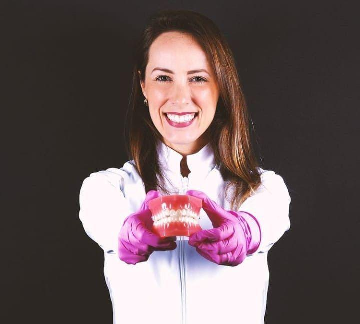

Um novo olhar sobre o cuidado com o seu sorriso.
Experiência, tecnologia e cuidado humanizado em cada detalhe.
Mais do que cuidar de sorrisos, cuidamos de pessoas.
Mais de 15 anos de experiência e dedicação à odontologia, conforme divulgado pela clínica. Aqui, cada atendimento começa pela escuta.
Atendimento humanizadoAtenção individual a cada paciente.
Ambiente acolhedorUm espaço pensado para você se sentir à vontade.
Profissionais especializadosEquipe dedicada à saúde bucal.
Adultos e criançasCuidado para toda a família.
Cuidados completos para o seu sorriso.
Conheça os ambientes da clínica.
Dra.Lorena Dias

Fundadora da Ama Odonto, a Dra. Lorena Dias dedica mais de 15 anos à odontologia, conforme informação divulgada pela clínica.
Formação, especializações e trajetória detalhada serão incluídas somente após confirmação da clínica.
Conhecer a clínicaEstá na hora de cuidar do seu sorriso?
- Escolha o assuntoSelecione o motivo do atendimento.
- Confira a mensagemEla já vai pronta para a nossa equipe.
- Envie pelo WhatsAppCombine data e horário diretamente com a clínica.
Perguntas frequentes.
Venha nos visitar.
- Endereço
- Rua Castro Meireles, 848 — Maraponga, Fortaleza - CE
- (85) 99101-0000
- Horários
- Segunda a sexta, das 08h às 12h e das 13h às 17h
Se o mapa não aparecer, use o botão “Abrir no Google Maps”.
Demonstração de proposta de redesign. Não é o site oficial nem foi aprovada pela clínica.Ama Odonto — Maraponga, Fortaleza